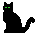

E scape from H
Bertram Redgrave's work in progress
Bitch and Moan after an overdose of candy corn

The Pumpkin Pie
by andrea (moloch) chrisman
Lucy stood strategically poised above her new pumpkins with a shiny sharp blade borne in her right hand, and a glove on the left. Her mother had elegantly markered in the facial features on the two fruit, and had laid them on the countertop for her daughter's first year of gutting and carving. One bore a devilish grin, and the other a menacing frown.
"Mom, I'm gonna cut it now!" Lucy yelled to deaf ears in the other room.
The knife came down aiming at the top edge of the pumpkin; but it did not meet the firm exterior and plunge into the fleshy exterior as she expected. Instead, a hand reached out, grabbing the knife. Another hand grabbed her gloved wrist. She screamed until another hand covered her shrieks so that they became only muffled whimpers. Lucy looked at the two menaces on the counter: their markered mouths suddenly given animation. She attempted another scream to no avail. The razor edge came down on her abdomen, slicing open flesh, inciting blood to riot. The frowning pumpkin head simply laughed as its companion proceeded to quarter his victim, drawing forth viscera and tissue from a now limp corpse.
Frown-man's passivity did not last long, however. His face turned menacing as it began to marker on Lucy's cooling back: there an eye, there a nose. It resembled a Picasso-one of the three women who made him famous. Grinner put his knife then to these markered features, while his fellow murderer fetched the candles Lucy's mother had intended for them.
The two pumpkins finished their work by thumb-tacking Lucy face to the wood on her kitchen door, and resting a burning candle on her pelvic bone in her hollowed out abdomen.
When the two heard Lucy's mother grow agitated about the smell, they made a quick escape through the window. Little did they realize that they were on the tenth floor of an apartment building. Apartment 12's children had a lovely pumpkin pie that Halloween; in Apartment 102 a brightly lit grin smiled upon the kitchen of the apartment.
The Night of Halloween
and a work in progress by a devilish Bertram Redgrave
Halloween Halloween and all through the night,
Not a creature was stirring, not an elf, nor a sprite.
The goblins were tucked all snug in their beds,
And visions of entrails danced through their heads.
The skeletons hung in the crypt with great care,
Their bones had been dusted and some had parted their hair.
And ma in her casket and pa in his urn
Had settled that night for a long rest, well earned...
When out in the graveyard there arose such a clatter,
That I sprang from my bier to see what was the matter.
I hobbled to the window and threw open the grate,
Crushing a spider who dined on her mate...
The moon shone down on the dead dried up leaves
And a maggot was dining on one of my knees,
It cased me to limp, but what ho!, doesn't matter,
They've eaten my spleen, my kidneys, my bladder.
I gazed with my good eye, the only one clear,
And spied a great pumpkin with a six pack of beer.
"What's happenin?" I blurted, and dropped my left arm.
"We're having a party!" he decried with great charm
"The pumpkins, the scarecrows, the witches and bats,
Some of the gremlins and all of the frats."
 send us your deconstructionist theories concerning our literature
send us your deconstructionist theories concerning our literature